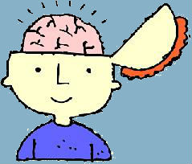
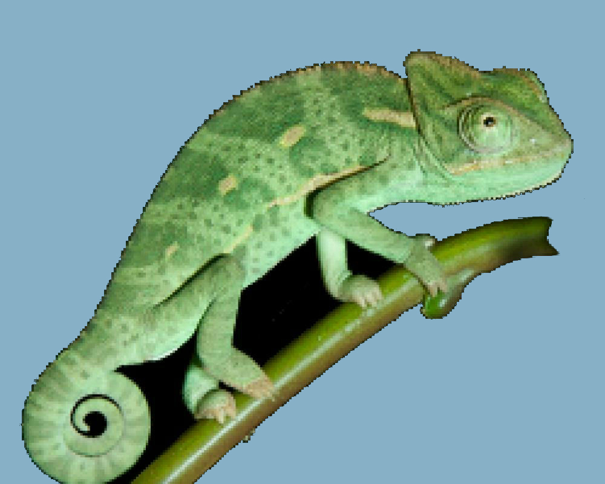
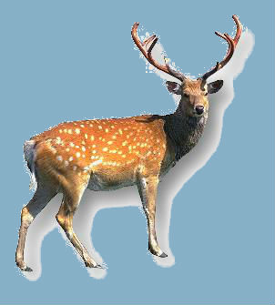
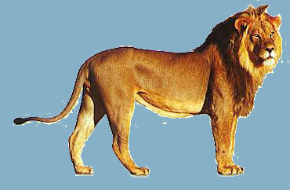
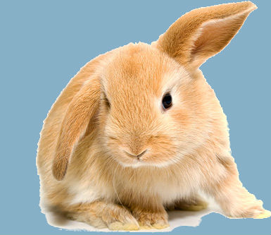

Vechten, vluchten of bevriezen
Psycho-educatie over het fight, flight or freeze mechanisme. Het kind kan door het verhaal heen swipen totdat deze volledig is doorlopen. Wanneer er gekozen moet worden welke reactie het kind herkent in zichzelf wordt deze niet opgeslagen en heeft dit geen effect op de vervolgschermen. Dit is eerder een check of de kinderen hebben begrepen wat de instinctieve reacties zijn.

Het reptielenbrein
Het reptielenbrein zit diep in onze hersenen. Dit deel van het brein zorgt voor de automatisch dingen in ons lijf, zoals hartslag en ademhaling. Daar denken we niet over na, dat doen we gewoon.
De oorzaak van PTSS is vaak een ingrijpende gebeurtenis. Deze kan je zelf hebben meegemaakt of hebben gezien, zoals bijvoorbeeld getuige zijn van een schietpartij. Ook getuige zijn van een gebeurtenis kan leiden tot een PTSS.

Het zoogdierenbrein
Het zoogdierenbrein is het gedeelte van het brein dat zorgt voor de instinctreacties als er gevaar dreigt of als we stress hebben. Instinctreacties die wij mensen hebben, lijken op die van de dieren. Laten we eens kijken wat de dieren doen als er gevaar dreigt:Wat doen hertjes als ze lekker aan het eten zijn en er komt een leeuw aan?
Ze vluchten, omdat ze heel hard kunnen lopen. Ze vluchten tot er geen gevaar meer is. Vluchten is een instinctreactie.
Wat doet die leeuw als hij een hertje heeft gevangen en hij lekker aan het eten is en er komt een andere leeuw aan?
Hij vlucht niet want leeuwen vechten. Daar zijn ze goed in. Als er gevaar dreigt, vecht de leeuw. Dit is ook een instinctreactie.
En wat doen konijntjes als ze in gevaar zijn?
Ze bevriezen als het ware, zodat ze heel stil wachten tot het gevaar overgaat. Dat kan ook een instinctreactie zijn